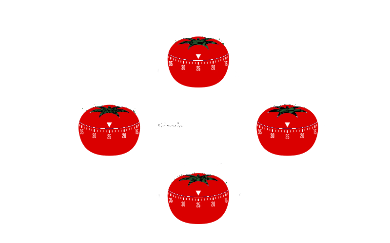

Sobre a Técnica Pomodoro
O método Pomodoro é uma técnica de gerenciamento de tempo desenvolvida no final dos anos 1980 por Francesco Cirillo. O nome "Pomodoro" vem da palavra italiana para "tomate", inspirado pelo cronômetro de cozinha em forma de tomate que Cirillo usava enquanto estudava. A técnica é projetada para melhorar a produtividade e foco, dividindo o trabalho em intervalos curtos, conhecidos como "pomodoros", seguidos por pequenas pausas.
Estrutura do Método
- Planejamento: Antes de começar a técnica, é importante definir quais tarefas precisam ser concluídas. Essas tarefas são listadas, e as mais prioritárias são escolhidas para serem realizadas durante os pomodoros.
- Configuração: Um cronômetro é ajustado para 25 minutos, o que corresponde a um "pomodoro". Durante esse período, a pessoa se concentra exclusivamente na tarefa escolhida.
- Trabalho Concentrado: Durante os 25 minutos, a pessoa trabalha intensamente na tarefa sem interrupções. É fundamental resistir à tentação de verificar emails, redes sociais ou atender chamadas telefônicas.
- Pausa Curta: Após o término do pomodoro, a pessoa faz uma pausa curta de 5 minutos. Esse intervalo permite descansar a mente e evitar o esgotamento. Durante essa pausa, atividades relaxantes e de preferência longe da tela são recomendadas, como caminhar, beber água ou fazer alongamentos.
- Repetição: O ciclo de 25 minutos de trabalho seguido por 5 minutos de pausa é repetido quatro vezes. Cada sequência de quatro pomodoros é seguida por uma pausa mais longa, geralmente entre 15 a 30 minutos. Essa pausa mais prolongada permite um descanso mais profundo e uma recuperação mental mais eficaz.
A estrutura do Método Pomodoro é simples e eficaz, composta por cinco passos principais:

Vantagens do método Pomodoro
- Aumento da Produtividade: Ao quebrar o trabalho em blocos menores, a técnica ajuda a manter o foco e a eficiência durante os períodos de trabalho, evitando a procrastinação e a perda de tempo com distrações.
- Melhora do Foco e da Concentração: Os intervalos regulares ajudam a manter o cérebro alerta e evitam a fadiga mental. A prática de trabalhar sem interrupções promove uma concentração profunda.
- Gerenciamento do Tempo: A técnica ajuda a medir o tempo gasto em diferentes tarefas, proporcionando uma visão clara de como o tempo está sendo utilizado e onde pode haver oportunidades para melhorar a eficiência.
- Redução do Estresse: As pausas regulares proporcionam um alívio do estresse, permitindo momentos frequentes de descanso e recuperação. Isso contribui para um equilíbrio melhor entre trabalho e bem-estar.
O Método Pomodoro oferece uma série de benefícios significativos que podem transformar a maneira como gerenciamos nosso tempo e abordamos nossas tarefas diárias. Desenvolvido para otimizar a produtividade e manter o foco, este método simples e eficaz ajuda a dividir o trabalho em blocos de tempo mais manejáveis, intercalados com pausas regulares. Outras vantagens são:
Aplicação na prática
- Escolher Ferramentas: Existem várias ferramentas e aplicativos disponíveis que podem auxiliar na implementação do método, como cronômetros específicos para Pomodoro, aplicativos de produtividade e até mesmo planilhas de controle de tempo.
- Eliminação de Distrações: Criar um ambiente de trabalho livre de distrações é essencial. Isso pode incluir desligar notificações de dispositivos eletrônicos, informar a outros sobre os períodos de trabalho ininterrupto e criar um espaço físico dedicado ao trabalho.
- Adaptação Individual: Cada pessoa pode ajustar a técnica conforme suas necessidades. Alguns podem achar que períodos de 25 minutos são curtos ou longos demais e podem adaptar a duração dos pomodoros e das pausas para melhor se adequarem ao seu ritmo de trabalho.